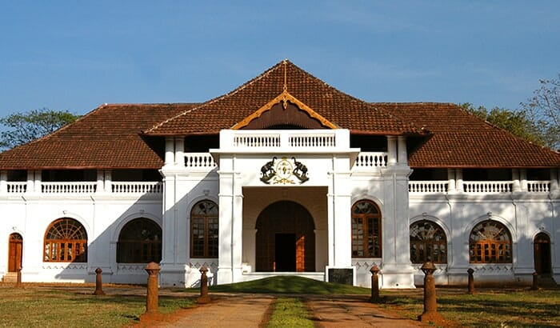
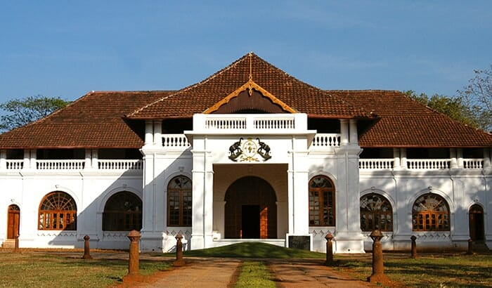

| home | about | heritage | hotels | gallery |
 

The Arakkal Museum is a museum dedicated to the Arakkal family, the only Muslim royal family in Kerala, India. The museum is actually a section of the Arakkalkettu (Arakkal Royal Palace). The durbar hall section of the palace has been converted into a museum by the Government of Kerala. It was opened in July 2005 after a Rs. 9,000,000 renovation. Although renovated by the government, the Arakkalkettu is still owned by the Arakkal Royal Trust and does not fall under the control of the country's archaeology department, the Archaeological Survey of India. The government had taken a keen interest in preserving the heritage of the Arakkal Family, which had played a prominent role in the history of Malabar. A nominal entry fee is charged by the Arakkal Royal Trust from visitors to the museum.
The museum exhibits artefacts and heirlooms of the royal family which includes the family seal, the pathayam (the wooden box in which grain was stored), document box and so on. The royal copies of the Holy Quran, an old-fashioned telephone, swords and daggers used by the rulers, and a telescope are also on display. Apart from these, there are exhibits that stand as testimonies to the Arakkal rulers’ relationship with European colonial powers as well as those relating to their maritime activities and monopoly on spice trade. It is a must visit site in the district, as it helps one gain an understanding of the cultural diversity that helped shape its current form.
The Arakkal Museum is located in Ayikkara, next to the Kannur City. It is located 2-3 kilometres from Kannur town